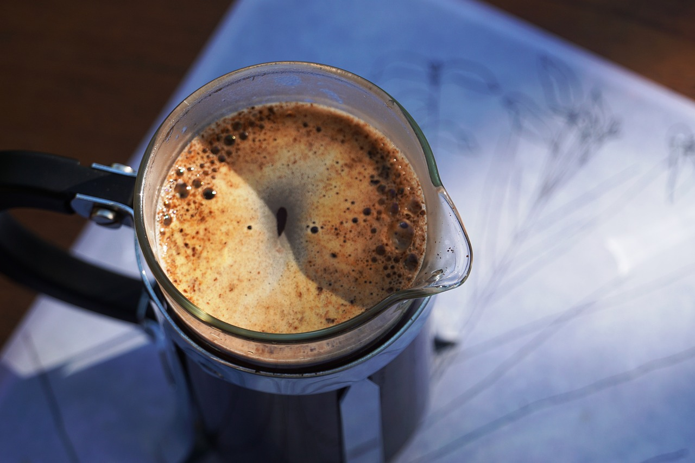
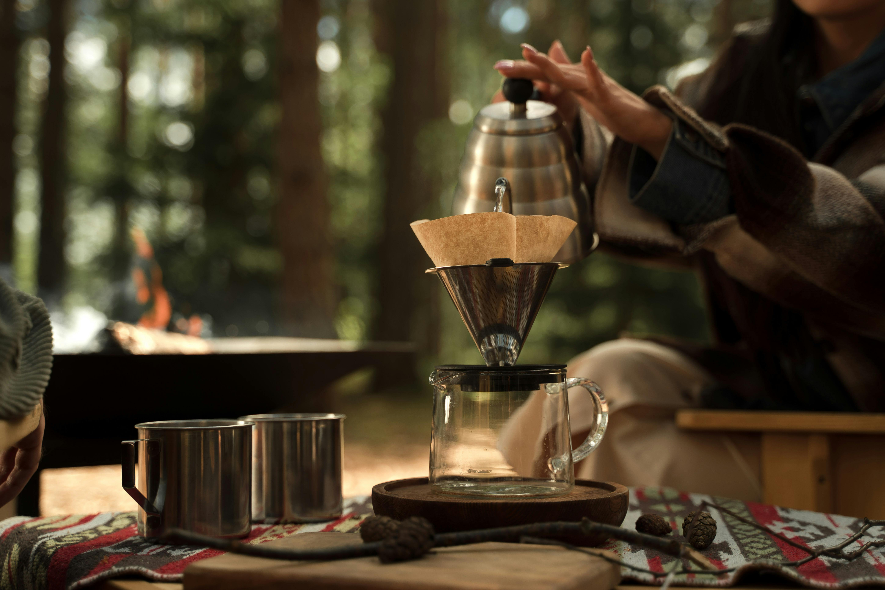

The Ultimate Guide to Brewing the Perfect Cup of Coffee at Home
Welcome, coffee enthusiasts! Today we dive deep into the art and science of brewing that perfect cup of coffee at home. Whether you’re a seasoned barista or a beginner looking to up your coffee game, this guide covers everything from bean selection to troubleshooting common brewing issues. Let’s embark on this aromatic journey together!

1. Understanding Your Coffee Beans
Not all beans are created equal. The flavor profile of your coffee depends on factors such as the origin, roast level, and even the altitude at which the beans were grown. Light roasts tend to preserve the natural flavor and acidity of the bean, while dark roasts bring out a bolder, smokier flavor.

Action Tip: Next time you shop, ask your local roaster about the origin and roast profile of their beans. Experiment with different types to discover your favorite flavor notes.
2. The Importance of Grinding
The grind size is the foundation of any great brew. An uneven grind can lead to over-extraction (resulting in bitterness) or under-extraction (yielding a sour taste). For consistency, invest in a burr grinder that provides a uniform grind size tailored to your brewing method.

Action Tip: Before your next brew, measure your coffee beans and grind them fresh. Notice the texture differences and adjust your grinder settings as needed.
3. Water: The Unsung Hero
Water makes up nearly 98% of your coffee, so its quality directly affects the taste. Use filtered water and aim for a brewing temperature between 90°C and 96°C. Too hot, and you risk burning the delicate flavors; too cool, and you might not extract enough aroma.

Action Tip: Use a thermometer or bring water to a boil then let it sit for 30 seconds to reach the ideal temperature before brewing.
4. In-Depth Look at Brewing Methods
French Press
A classic method that offers a full-bodied brew. The immersion technique allows for a rich extraction of oils and flavors.
Action Tip: Experiment with steeping times. Start with 4 minutes and adjust according to your taste preference.
Pour-Over
This method emphasizes clarity and complexity in your cup. The slow, controlled pour allows water to extract nuanced flavors from your grounds.
Action Tip: Use a gooseneck kettle for better control over your pour, and try a blooming phase by pre-wetting the grounds.
AeroPress
The AeroPress is versatile and quick, producing a clean cup that can mimic both espresso and regular coffee. It’s perfect for experimenting with different brewing times and pressures.
Action Tip: Experiment with inversion methods and pressure to find a unique flavor profile that suits your palate.
Espresso
For those who love a strong, concentrated cup, mastering espresso is key. Fine grind size, high pressure, and precise timing come together to produce a robust, creamy shot.

Action Tip: Tweak the grind and tamping pressure. Notice how even minor adjustments can dramatically change your shot’s quality.
5. Troubleshooting Your Brew
Every coffee lover faces brewing challenges. If your coffee tastes too bitter, it might be over-extracted or the water too hot. A sour taste may indicate under-extraction or a too-coarse grind.
- Bitterness: Adjust your water temperature and grind size.
- Sourness: Increase the brew time or use a slightly finer grind.
- Weak Flavor: Ensure you’re using the correct coffee-to-water ratio (around 1:16) and fresh beans.
Action Tip: Keep a brewing journal to note your adjustments and the resulting flavors. This helps you fine-tune your process over time.
6. Actionable Tips for Your Next Brew
Before your next brewing session, consider these key steps:
- Measure Accurately: Use a digital scale to keep your ratios consistent.
- Grind Fresh: Only grind beans just before brewing to preserve flavor.
- Control Temperature: Use filtered water and aim for the ideal brewing range.
- Experiment: Try different brewing methods and techniques—your taste is unique!
- Document Your Process: Note down every tweak and outcome to perfect your ritual.
7. Final Tip: Track Your Brews
The final and most crucial tip in your coffee journey is to track your brews. Document every experiment—from bean type and grind size to water temperature and brew time. Tracking your process allows you to replicate success and learn from each cup.

With BrewLog, you can effortlessly record, analyze, and refine your brewing techniques, ensuring that every cup you make is better than the last.